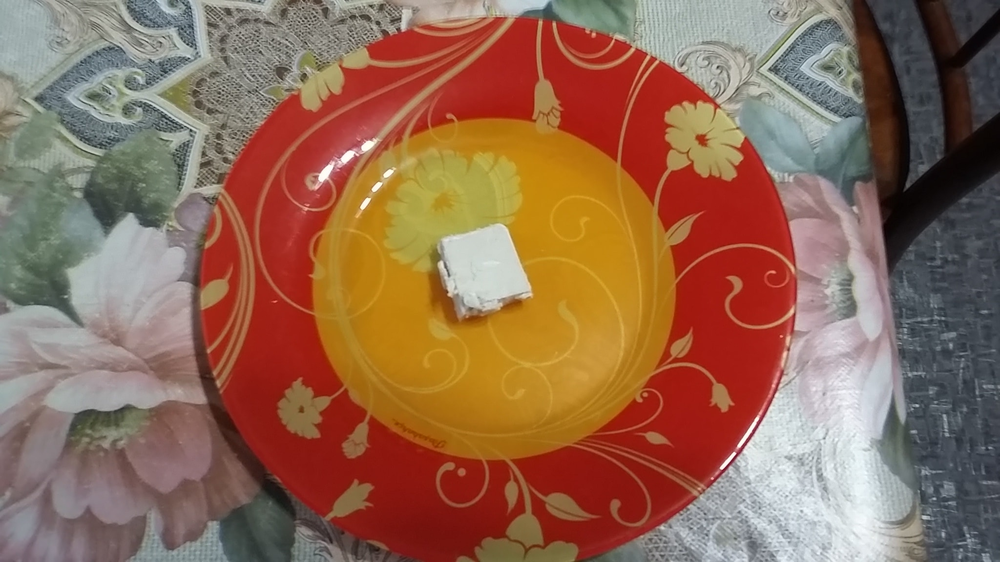
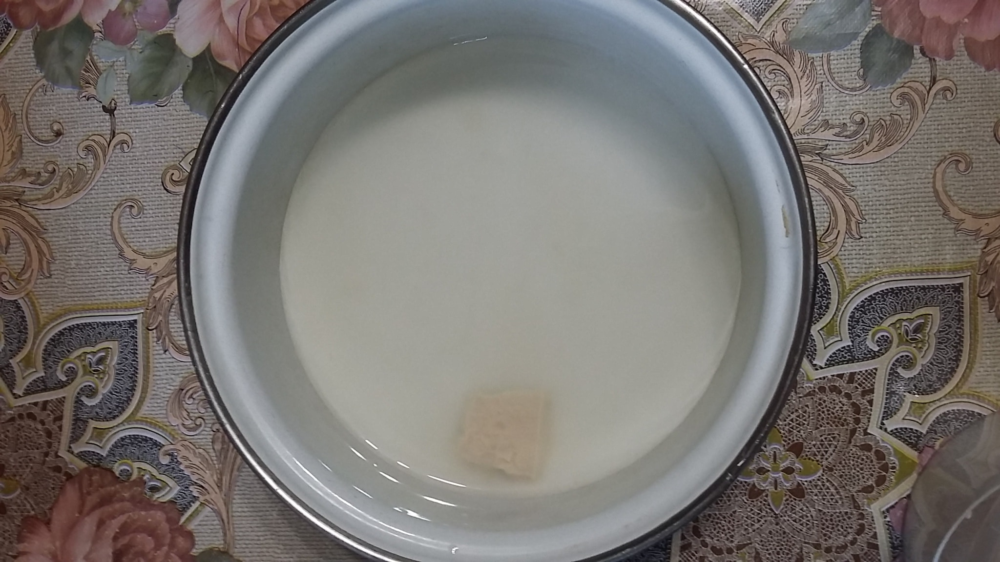
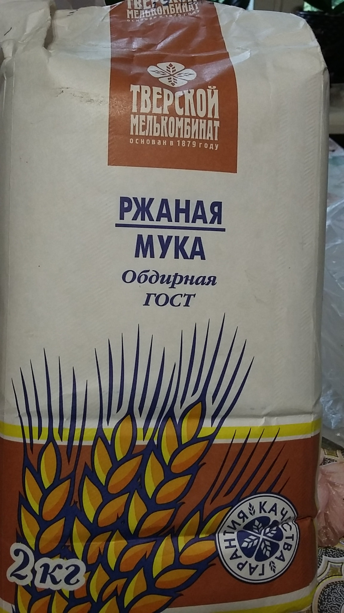
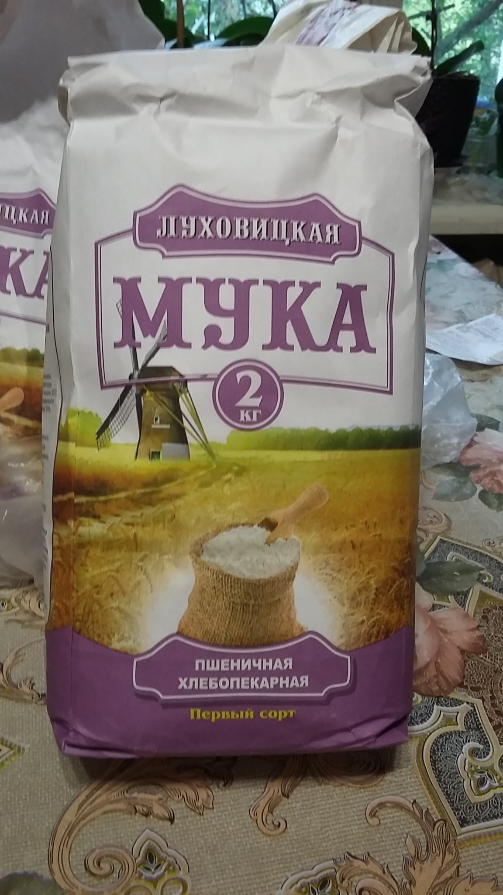
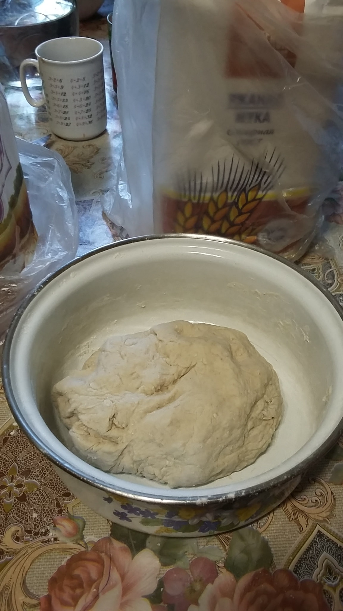
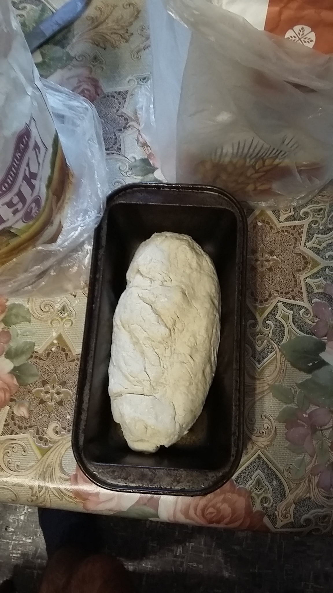
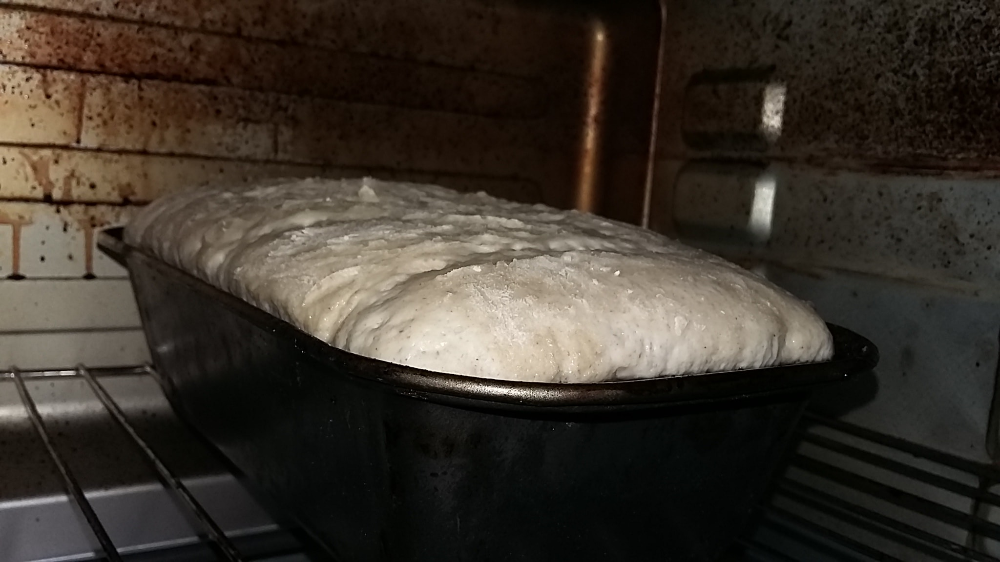
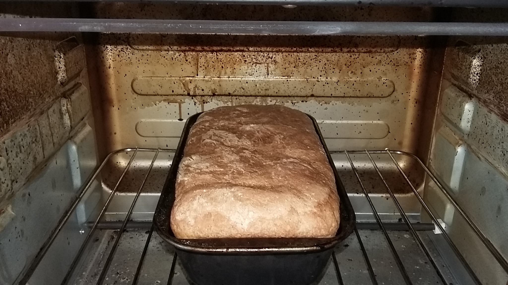

Всем привет! :-)) Меня зовут Павел. Сегодня я расскажу, как легко испечь хлеб дома. Я уже несколько лет занимаюсь выпечкой своего хлеба. Изначально
я пек бездрожжевой хлеб (на закваске), и мне он очень нравился, вот только с закваской было очень много возни. Но я стоически переносил эти тяготы,
пока, наконец, чаша не переполнилась и я отправился в магазин за дрожжами. ;-)) Итак, сейчас я расскажу, как испечь классный хлеб в домашних условиях.
| Дрожжи я храню в морозилке, а то в холодильнике они быстро подсыхают. Но предварительно я их пока они мягкие нарезаю на кусочки по 7 грамм, и когда нужно печь хлеб, беру кусочек или два и нормуль ;-)). |  |
| Беру кастрюльку, наливаю воду, кладу дрожжи, соль и сахар, все перемешиваю до полного растворения всего. |  |
| Добавляю отруби, затем поочередно вношу муку: ложка пшеничной, ложка ржаной, ложка пшеничной, ложка ржаной и т.д... |   |
| Вымешиваю тесто рукой, пока тесто не станет нужной консистенции, то есть не будет липнуть к рукам. |  |
| Выкладываю тесто в форму, смазанную маслом, и отправляю в подогретую печку. |  |
| Жду пока тесто займет всю форму и чуть-чуть поднимется выше нее (на это уходит примерно два часа). |  |
| Включаю духовку на 180 градусов Цельсия и завожу таймер на 35 минут. По истечении этого времени мы получаем вот такую красоту. А какой стоит аромат на кухне - этого не передать словами. |  |
Рецепт очень легкий и простой. Хлеб выходит около 500 грамм. Всем советую попробовать испечь такую буханочку и похрустеть свежей корочкой, ;-)).